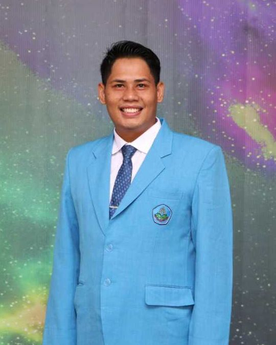
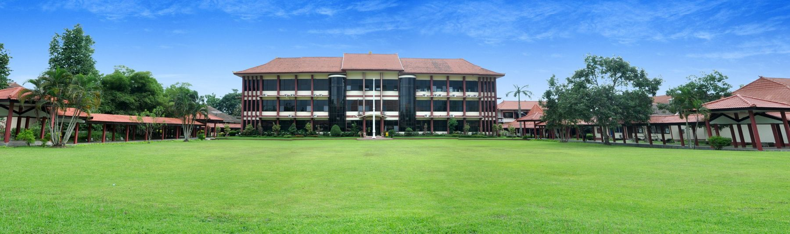
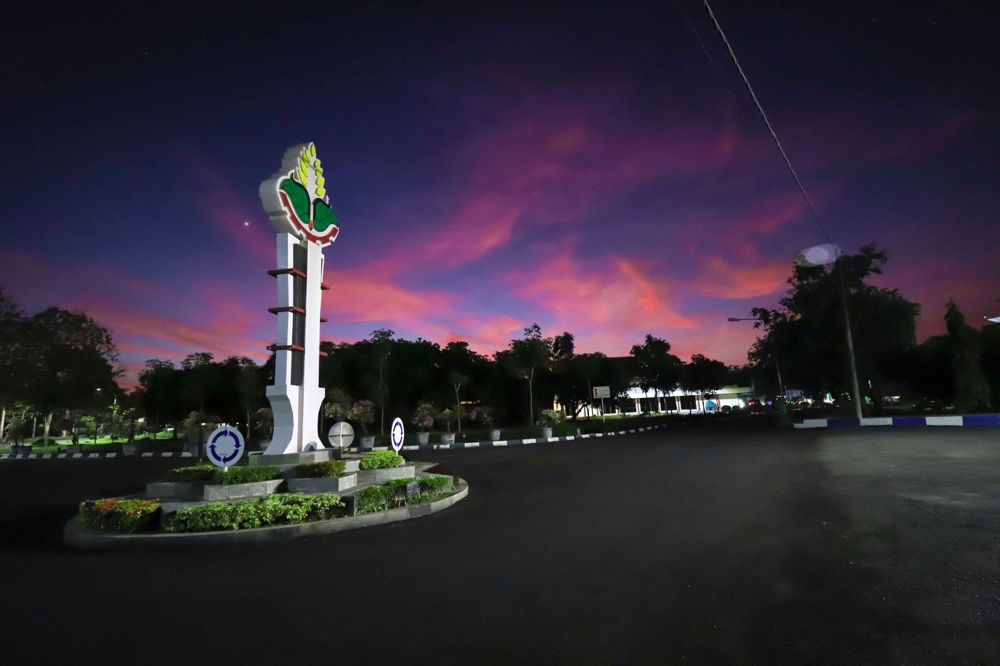

Refa Firgiyanto
Dosen dan peneliti di Jurusan Produksi Pertanian, Politeknik Negeri Jember. Riset saya berfokus pada budidaya dan perbanyakan tanaman hortikultura, kultur jaringan, nutrisi tanaman berbasis bahan organik, serta pertanian presisi dan energi terbarukan untuk petani.
Saat ini menjabat Kepala UPA Pengembangan Pertanian Terpadu (PTT) Polije, yang menaungi Teaching Factory kampus.

Sumber: profil SINTA 6096230, dilihat 28 Oktober 2026. Daftar karya di bawah dari biodata per Juni 2026.
Daftar isi
Pilih bagian untuk langsung menuju ke sanaTentang saya
Saya menempuh S1 Agroteknologi di Universitas Jenderal Soedirman dan S2 Agronomi dan Hortikultura di Institut Pertanian Bogor. Di Politeknik Negeri Jember saya membina mahasiswa D3 Produksi Tanaman Hortikultura dan mengelola kebun praktik serta Teaching Factory (TEFA) kampus.
Penelitian saya berangkat dari kebutuhan lapangan: memperbaiki teknik perbanyakan krisan, anggrek Vanda, pisang, dan nanas secara in vitro; memanfaatkan pupuk organik, biochar, dan mikroba tanah untuk tanaman hortikultura dan pegagan; serta menerapkan pertanian presisi berbasis IoT, kecerdasan buatan, dan tenaga surya bersama mitra industri dan kelompok tani. Hasilnya saya bawa kembali ke masyarakat melalui pengabdian di sentra jeruk, durian, mangga, kopi, dan jamur di Jember dan sekitarnya.
Pendidikan
- 2013–2015S2 Agronomi dan HortikulturaInstitut Pertanian BogorTesis: Pertumbuhan dan ketahanan terhadap penyakit busuk lunak pada anggrek Phalaenopsis dengan pemupukan dan asam salisilat
- 2008–2012S1 AgroteknologiUniversitas Jenderal SoedirmanSkripsi: Kajian pertumbuhan bibit belimbing (Averrhoa carambola L.) pada pemberian beberapa dosis pupuk majemuk NPK dan pupuk daun
Jabatan dan peran
- Kepala UPA Pengembangan Pertanian Terpadu (PTT)
Politeknik Negeri Jember - Lektor, bidang Agronomi dan Hortikultura
Jurusan Produksi Pertanian - Editor in Chief, Agrimas: Jurnal Pengabdian Masyarakat Bidang Pertanian
2022–2024 - Reviewer Program Kreativitas Mahasiswa (PKM) Nasional
Direktorat Jenderal Pendidikan Vokasi, 2022–2024
Bidang minat
Proyek penelitian
Penelitian yang saya ketuai atau ikuti sejak 2017, dari hibah internal Polije sampai skema kompetitif nasional dan Matching Fund Vokasi bersama industri.

Artikel ilmiah
Artikel jurnal dan prosiding, dikelompokkan per tahun dengan yang terbaru di atas. Artikel bertanda kuartil terindeks Scopus menurut SINTA.
Pemakalah seminar ilmiah
Karya buku
Buku ajar dan buku referensi, ditulis sendiri atau bersama penulis lain.
Hak cipta terdaftar
Ciptaan yang tercatat di Direktorat Jenderal Kekayaan Intelektual (DJKI): program komputer, modul pelatihan, buku, video, dan desain.
| Tahun | Judul ciptaan | Jenis | Nomor pencatatan |
|---|
Pengabdian kepada masyarakat
Pendampingan kelompok tani, UMKM, pesantren, dan kader posyandu.
Mata kuliah yang diampu
Di Program Studi D3 Produksi Tanaman Hortikultura dan program terkait di Jurusan Produksi Pertanian.
- Pengantar Ilmu Pertanian
- Dasar Budidaya Tanaman Hortikultura
- Pembiakan Tanaman Hortikultura
- Manajemen Air dan Hara
- Budidaya Tanaman Hias
- Budidaya Tanaman Buah Semusim
- Teknologi Benih
- Hidroponik
- Budidaya Tanaman Buah Tahunan
- Budidaya Sayuran
- Pertanian Organik
- Agroinformatika
- Agroteknologi
Penghargaan dan pengakuan
Kampus dan lahan praktik
Lingkungan tempat saya mengajar dan meneliti di Politeknik Negeri Jember. Ketuk foto untuk memperbesar.

Buat janji temu
Untuk undangan narasumber, seminar, ujian, kerja sama riset, atau konsultasi budidaya hortikultura, silakan kirim email dengan menyebutkan tanggal, tempat, dan topik kegiatan.
Jl. Mastrip Kotak Pos 164, Jember 68101